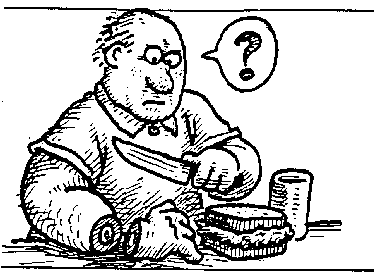
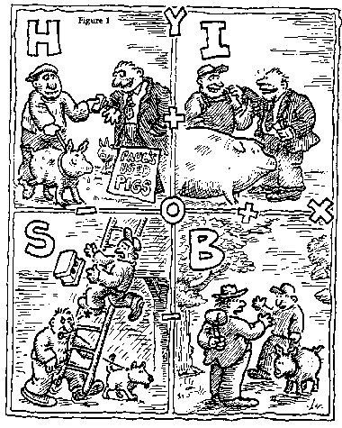
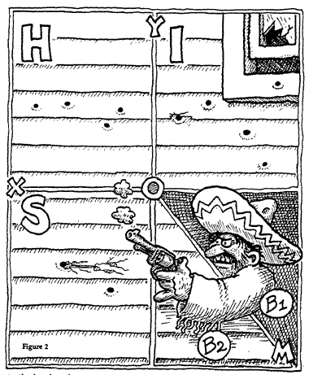
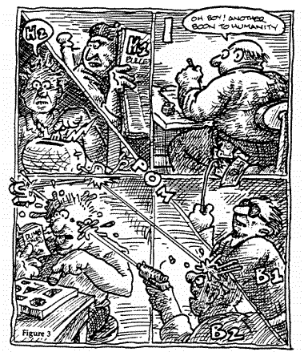

Índice
ilustrações de James Donnelly
A primeira lei básica da estupidez humana
A primeira lei básica da estupidez humana afirma sem ambiguidade que:
Sempre e inevitavelmente todos subestimam o número de indivíduos estúpidos em circulação.
A princípio, a afirmação soa trivial, vaga e terrivelmente mesquinha. No entanto, um exame mais minucioso revelará sua veracidade realista. Não importa quão altas sejam as estimativas de estupidez humana, a pessoa fica repetidamente e recorrentemente assustada com o fato de que:
- a) as pessoas que antes eram julgadas racionais e inteligentes tornam-se descaradamente estúpidas.
- b) dia após dia, com incessante monotonia, somos assediados em nossas atividades por estúpidos que aparecem repentina e inesperadamente nos lugares mais inconvenientes e nos momentos mais improváveis.
A Primeira Lei Básica me impede de atribuir um valor numérico específico à fração de pessoas estúpidas dentro da população total: qualquer estimativa numérica acabaria sendo subestimada. Assim, nas páginas seguintes, denotarei a fração de pessoas estúpidas dentro de uma população pelo símbolo σ.
A segunda lei fundamental
As tendências culturais agora em voga no Ocidente favorecem uma abordagem igualitária da vida. As pessoas gostam de pensar nos seres humanos como o resultado de uma máquina de produção em massa perfeitamente projetada. Geneticistas e sociólogos especialmente se esforçam para provar, com um impressionante aparato de dados e formulações científicas, que todos os homens são naturalmente iguais e, se alguns são mais iguais do que outros, isso se deve à criação e não à natureza. Faço uma exceção a essa visão geral. É minha firme convicção, apoiada por anos de observação e experimentação, que os homens não são iguais, que alguns são estúpidos e outros não, e que a diferença é determinada pela natureza e não por forças ou fatores culturais. Alguém é estúpido da mesma forma que é ruivo; um pertence ao conjunto estúpido como pertence a um grupo sanguíneo. Um homem estúpido nasce um homem estúpido por um ato da Providência. Embora convencido de que fração dos seres humanos são estúpidos e que o são por causa de características genéticas, não sou um reacionário tentando reintroduzir sub-repticiamente a discriminação de classe ou raça. Acredito firmemente que a estupidez é um privilégio indiscriminado de todos os grupos humanos e é distribuído uniformemente de acordo com uma proporção constante. Este fato é cientificamente expresso pela Segunda Lei Fundamental, que afirma que
A probabilidade de uma certa pessoa ser estúpida independe de qualquer outra característica dessa pessoa.
Nesse aspecto, a Natureza parece realmente ter se superado. É sabido que a Natureza consegue, de forma bastante misteriosa, manter constante a frequência relativa de certos fenômenos naturais. Por exemplo, quer os homens proliferem no Pólo Norte ou no Equador, quer os pares sejam desenvolvidos ou subdesenvolvidos, quer sejam negros, vermelhos, brancos ou amarelos, a proporção entre homens e mulheres entre os recém-nascidos é uma constante, com uma proporção muito pequena prevalência do sexo masculino. Não sabemos como a Natureza consegue esse resultado notável, mas sabemos que para alcançá-lo a Natureza deve operar com grandes números. O fato mais notável sobre a frequência da estupidez é que a Natureza consegue tornar essa frequência igual à probabilidade, independentemente do tamanho do grupo.
Assim, encontra-se a mesma porcentagem de pessoas estúpidas, quer se trate de grupos muito grandes, quer se trate de grupos muito pequenos. Nenhum outro conjunto de fenômenos observáveis oferece uma prova tão impressionante dos poderes da Natureza.
A evidência de que a educação não tem nada a ver com a probabilidade foi fornecida por experimentos realizados em um grande número de universidades em todo o mundo. Pode-se distinguir a população composta que constitui uma universidade em cinco grandes grupos, a saber, os operários, os empregados de colarinho branco, os estudantes, os administradores e os professores.
Sempre que analisava os trabalhadores de colarinho azul, descobri que a fração σ deles era estúpida. Como o valor de σ era maior do que eu esperava (Primeira Lei), fazendo minha homenagem à moda pensei a princípio que a culpa era da segregação, da pobreza, da falta de educação. Mas, subindo na escala social, descobri que a mesma proporção prevalecia entre os funcionários administrativos e entre os estudantes. Mais impressionantes ainda foram os resultados entre os professores. Quer eu considere uma grande universidade ou uma pequena faculdade, uma instituição famosa ou obscura, descobri que a mesma fração σ dos professores são estúpidos. Fiquei tão perplexo com os resultados que fiz questão de estender minha pesquisa a um grupo especialmente selecionado, a uma verdadeira elite, os laureados com o Nobel. O resultado confirmou os poderes supremos da Natureza:
Essa ideia era difícil de aceitar e digerir, mas muitos resultados experimentais provaram sua veracidade fundamental. A Segunda Lei Básica é uma lei de ferro e não admite exceções. O Movimento de Libertação Feminina apoiará a Segunda Lei Básica, pois mostra que os estúpidos são proporcionalmente tão numerosos entre os homens quanto entre as mulheres. Os subdesenvolvidos do Terceiro Mundo provavelmente se consolarão com a Segunda Lei Fundamental, pois nela encontrarão a prova de que afinal os desenvolvidos não são tão desenvolvidos. Quer a Segunda Lei Básica seja apreciada ou não, no entanto, suas implicações são assustadoras: a Lei implica que, quer você se mova em círculos distintos ou se refugie entre os caçadores de cabeças da Polinésia, quer você se tranque em um mosteiro ou decida passar o resto de sua vida na companhia de mulheres bonitas e lascivas.
A terceira (e áurea) lei básica
A Terceira Lei Básica assume, embora não o declare explicitamente, que os seres humanos se enquadram em quatro categorias básicas: os indefesos, os inteligentes, os bandidos e os estúpidos. Será facilmente reconhecido pelo leitor perspicaz que essas quatro categorias correspondem às quatro áreas I, H, S, B do gráfico básico (veja abaixo).
Se Tom realizar uma ação e sofrer uma perda enquanto produz um ganho para Dick, a marca de Tom cairá no campo H: Tom agiu impotente. Se Tom realizar uma ação pela qual obtém um ganho enquanto também cede um ganho a Dick, a nota de Tom cairá na área I: Tom agiu de forma inteligente. Se Tom realizar uma ação pela qual obtém um ganho causando uma perda a Dick, a marca de Tom cairá na área B: Tom agiu como um bandido. A estupidez está relacionada à área S e a todas as posições no eixo Y abaixo do ponto O. Como a Terceira Lei Básica esclarece explicitamente:
Uma pessoa estúpida é uma pessoa que causa prejuízos a outra pessoa ou a um grupo de pessoas enquanto ele próprio não obtém nenhum ganho e até possivelmente incorre em perdas.
Quando confrontados pela primeira vez com a Terceira Lei Básica, as pessoas racionais reagem instintivamente com sentimentos de ceticismo e incredulidade. O fato é que as pessoas razoáveis têm dificuldade em conceber e compreender o comportamento irracional. Mas abandonemos o plano elevado da teoria e olhemos pragmaticamente para nossa vida cotidiana. Todos nós nos lembramos de ocasiões em que um sujeito tomou uma atitude que resultou em seu ganho e nossa perda: tivemos que lidar com um bandido. Também nos lembramos de casos em que um sujeito tomou uma atitude que resultou em sua perda e em nosso ganho: tivemos que lidar com uma pessoa indefesa. Podemos nos lembrar de casos em que um sujeito tomou uma atitude pela qual ambas as partes ganharam: ele era inteligente. Esses casos realmente ocorrem. Mas, após uma reflexão cuidadosa, você deve admitir que esses não são os eventos que pontuam com mais frequência nossa vida diária. A nossa vida quotidiana é maioritariamente feita de casos em que perdemos dinheiro e/ou tempo e/ou energia e/ou apetite, alegria e boa saúde por causa da ação improvável de alguma criatura absurda que nada tem a ganhar e aliás nada ganha com nos causando constrangimento, dificuldades ou danos. Ninguém sabe, entende ou pode explicar por que aquela criatura absurda faz o que faz. Na verdade não há explicação - ou melhor, só há uma explicação: a pessoa em questão é burra.
Distribuição de frequência
A maioria das pessoas não age de forma consistente. Sob certas circunstâncias, uma determinada pessoa age de forma inteligente e, em circunstâncias diferentes, a mesma pessoa agirá desamparadamente. A única exceção importante à regra é representada pelas pessoas estúpidas que normalmente mostram uma forte propensão para a consistência perfeita em todos os campos de empreendimentos humanos.
De tudo o que se segue, não se segue que podemos mapear no gráfico básico apenas indivíduos estúpidos. Podemos calcular para cada pessoa sua posição média ponderada no plano da figura 1 independentemente de seu grau de inconsistência. Uma pessoa indefesa pode ocasionalmente se comportar de maneira inteligente e, ocasionalmente, pode realizar a ação de um bandido. Mas como a pessoa em questão é fundamentalmente desamparada, a maior parte de sua ação terá as características de desamparo. Assim, a posição média ponderada geral de todas as ações de tal pessoa o colocará no quadrante H do gráfico básico.
O fato de ser possível colocar no gráfico indivíduos em vez de suas ações permite alguma digressão sobre a frequência dos tipos bandidos e estúpidos.
O bandido perfeito é aquele que, com suas ações, causa a outros indivíduos perdas iguais aos seus ganhos. O tipo mais grosseiro de banditismo é o roubo. Uma pessoa que rouba 100 libras de você sem lhe causar uma perda ou dano extra é um bandido perfeito: você perde 100 libras, ele ganha 100 libras. No gráfico básico, os bandidos perfeitos apareceriam em uma linha diagonal de 45 graus que divide a área B em duas subáreas perfeitamente simétricas (linha OM da figura 2).
No entanto, os bandidos "perfeitos" são relativamente poucos. A linha OM divide a área B em duas subáreas, B 1 e B 2 , e de longe a maior maioria dos bandidos cai em algum lugar em uma dessas duas subáreas.
Os bandidos que caem na área B 1 são aqueles indivíduos cujas ações lhes rendem lucros maiores do que os prejuízos que causam a outras pessoas. Todos os bandidos que têm direito a uma posição na área B 1 são bandidos com matizes de inteligência e, à medida que se aproximam do lado direito do eixo X, compartilham cada vez mais as características da pessoa inteligente.
Infelizmente, os indivíduos com direito a um cargo na área B 1 não são muito numerosos. A maioria dos bandidos cai na área B 2 . Os indivíduos que caem nesta área são aqueles cujas ações lhes rendem ganhos inferiores às perdas infligidas a outras pessoas. Se alguém o mata para roubar cinquenta libras ou se o mata para passar um fim de semana com sua esposa em Monte Carlo, podemos ter certeza de que ele não é um bandido perfeito. Mesmo usando seus valores para medir seus ganhos (mas ainda usando seus valores para medir suas perdas), ele cai na área B 2 muito perto da fronteira da pura estupidez. Os generais que causam vasta destruição e inúmeras baixas em troca de uma promoção ou medalha caem na mesma área.
A distribuição de frequência dos estúpidos é totalmente diferente da do bandido. Enquanto os bandidos estão principalmente espalhados por uma área, as pessoas estúpidas estão fortemente concentradas ao longo de uma linha, especificamente no eixo Y abaixo do ponto O. A razão para isso é que, de longe, a maioria das pessoas estúpidas é básica e inabalavelmente estúpida - em outras palavras, elas perseveram insistem em causar prejuízos e prejuízos a outras pessoas sem auferir nenhum ganho, seja positivo ou negativo.
A distribuição de frequência dos estúpidos é totalmente diferente da do bandido. Enquanto os bandidos estão principalmente espalhados por uma área, as pessoas estúpidas estão fortemente concentradas ao longo de uma linha, especificamente no eixo Y abaixo do ponto O. A razão para isso é que, de longe, a maioria das pessoas estúpidas é básica e inabalavelmente estúpida - em outras palavras, elas perseveram insistem em causar prejuízos e prejuízos a outras pessoas sem auferir nenhum ganho, seja positivo ou negativo.
O poder da estupidez
Não é difícil entender como o poder social, político e institucional potencializa o potencial danoso de um estúpido. Mas ainda é preciso explicar e entender o que essencialmente torna uma pessoa estúpida perigosa para outras pessoas - em outras palavras, o que constitui o poder da estupidez.
Pessoas essencialmente estúpidas são perigosas e prejudiciais porque pessoas razoáveis acham difícil imaginar e entender um comportamento irracional. Uma pessoa inteligente pode entender a lógica de um bandido. As ações do bandido seguem um padrão de racionalidade: racionalidade desagradável, se preferir, mas ainda assim racionalidade. O bandido quer uma vantagem em sua conta. Uma vez que ele não é inteligente o suficiente para criar maneiras de obter o mais, bem como fornecer um mais, ele produzirá seu mais fazendo com que um menos apareça em sua conta. Tudo isso é ruim, mas é racional e, se você for racional, pode prever isso. Você pode prever as ações de um bandido, suas manobras sórdidas e aspirações feias e muitas vezes pode aumentar suas defesas.
Com uma pessoa estúpida tudo isso é absolutamente impossível, como explica a Terceira Lei Básica. Uma criatura estúpida vai assediar você sem motivo, sem vantagem, sem nenhum plano ou esquema e nos momentos e lugares mais improváveis. Você não tem uma maneira racional de dizer se, quando, como e por que a criatura estúpida ataca. Quando confrontado com um indivíduo estúpido, você fica completamente à mercê dele. Como as ações do estúpido não obedecem às regras da racionalidade, segue-se que:
a) geralmente se é pego de surpresa pelo ataque; b) mesmo quando se toma conhecimento do ataque, não se pode organizar uma defesa racional, porque o próprio ataque carece de qualquer estrutura racional.
a) geralmente se é pego de surpresa pelo ataque; b) mesmo quando se toma conhecimento do ataque, não se pode organizar uma defesa racional, porque o próprio ataque carece de qualquer estrutura racional.
A quarta lei fundamental
Que pessoas indefesas, ou seja, aquelas que em nosso sistema de contabilidade se enquadram na área H, normalmente não reconhecem o quão perigosas são as pessoas estúpidas, não é de todo surpreendente. O fracasso deles é apenas outra expressão de seu desamparo. O fato verdadeiramente surpreendente, no entanto, é que também pessoas inteligentes e bandidos muitas vezes falham em reconhecer o poder de dano inerente à estupidez. É extremamente difícil explicar por que isso deve acontecer e só podemos observar que, quando confrontados com indivíduos estúpidos, muitas vezes homens inteligentes, bem como bandidos, cometem o erro de se entregar a sentimentos de autocomplacência e desprezo, em vez de secretar imediatamente quantidades adequadas de adrenalina e construindo defesas.
Alguém é tentado a acreditar que um homem estúpido só fará mal a si mesmo, mas isso é confundir estupidez com desamparo. Ocasionalmente, somos tentados a associar-nos a um indivíduo estúpido para usá-lo em nossos próprios esquemas. Tal manobra só pode ter efeitos desastrosos porque a) é baseada em um completo mal-entendido sobre a natureza essencial da estupidez e b) dá ao estúpido espaço adicional para o exercício de seus dons. Pode-se esperar manobrar o estúpido e, até certo ponto, pode-se realmente fazê-lo. Mas por causa do comportamento errático do estúpido, não se pode prever todas as ações e reações do estúpido e em pouco tempo será pulverizado pelos movimentos imprevisíveis do parceiro estúpido.
Isso é claramente resumido na Quarta Lei Básica, que afirma que:
Pessoas não estúpidas sempre subestimam o poder prejudicial de indivíduos estúpidos. Em particular, pessoas não estúpidas constantemente esquecem que em todos os momentos e lugares e sob quaisquer circunstâncias lidar e/ou associar-se com pessoas estúpidas sempre acaba sendo um erro caro.
Ao longo dos séculos e milênios, tanto na vida pública quanto na privada, incontáveis indivíduos têm descumprido a Quarta Lei Fundamental e esse descumprimento tem causado perdas incalculáveis à humanidade.
A quinta lei básica
Em vez de considerar o bem-estar do indivíduo, consideremos o bem-estar da sociedade, considerada neste contexto como a soma algébrica das condições individuais. Uma compreensão completa da Quinta Lei Básica é essencial para a análise. Pode-se acrescentar aqui, entre parênteses, que das Cinco Leis Básicas, a Quinta é certamente a mais conhecida e seu corolário é citado com muita frequência. A Quinta Lei Básica afirma que:
Uma pessoa estúpida é o tipo de pessoa mais perigosa.
O corolário da Lei é que:
Uma pessoa estúpida é mais perigosa que um bandido.
O resultado da ação de um bandido perfeito (a pessoa que cai na linha OM da figura 2) é pura e simplesmente uma transferência de riqueza e/ou bem-estar. Após a ação de um bandido perfeito, o bandido tem um plus em sua conta que é exatamente equivalente ao menos que ele causou a outra pessoa. A sociedade como um todo não está nem melhor nem pior. Se todos os membros de uma sociedade fossem bandidos perfeitos, a sociedade permaneceria estagnada, mas não haveria grande desastre. Todo o negócio equivaleria a transferências maciças de riqueza e bem-estar em favor daqueles que agissem. Se todos os membros da sociedade agissem em turnos regulares, não apenas a sociedade como um todo, mas também os indivíduos se encontrariam em um estado perfeitamente estável sem mudança.
Quando pessoas estúpidas estão trabalhando, a história é totalmente diferente. Pessoas estúpidas causam perdas a outras pessoas sem contrapartida de ganhos por conta própria. Assim, a sociedade como um todo é empobrecida. O sistema de contabilidade que encontra expressão nos gráficos básicos mostra que, enquanto todas as ações dos indivíduos que caem à direita da linha POM (ver fig. 3) contribuem para o bem-estar de uma sociedade; embora em graus diferentes, as ações de todos os indivíduos caindo à esquerda da mesma linha POM causam uma deterioração.
Em outras palavras, os desamparados com subtons de inteligência (área H 1 ), os bandidos com subtons de inteligência (área B 1 ) e, acima de tudo, os inteligentes (área I), todos contribuem, embora em graus diferentes, para o bem-estar de um sociedade. Por outro lado, os bandidos com conotações de estupidez (área B 2 ) e os desamparados com conotações de estupidez (área H 2 ) conseguem somar perdas às causadas por estúpidos aumentando assim o nefasto poder destrutivo deste último grupo.
Tudo isso sugere alguma reflexão sobre o desempenho das sociedades. De acordo com a Segunda Lei Fundamental, a fração de estúpidos é uma constante σ que não é afetada pelo tempo, espaço, raça, classe ou qualquer outra variável sociocultural ou histórica. Seria um grande erro acreditar que o número de pessoas estúpidas em uma sociedade em declínio é maior do que em uma sociedade em desenvolvimento. Ambas as sociedades são atormentadas pela mesma porcentagem de pessoas estúpidas. A diferença entre as duas sociedades é que na sociedade com desempenho ruim:
a) os membros estúpidos da sociedade são permitidos pelos outros membros para se tornarem mais ativos e realizarem mais ações; b) há uma mudança na composição da seção não estúpida com declínio relativo das populações das áreas I, H 1 e B 1 e aumento proporcional das populações H 2 e B 2 .
Esta presunção teórica é abundantemente confirmada por uma análise exaustiva de casos históricos. De facto a análise histórica permite-nos reformular as conclusões teóricas de uma forma mais factual e com um detalhe mais realista.
Quer se considere os tempos clássicos, medievais, modernos ou contemporâneos, fica-se impressionado com o fato de que qualquer país subindo a colina tem sua inevitável fração σ de pessoas estúpidas. No entanto, o país subindo a colina também tem uma fração extraordinariamente alta de pessoas inteligentes que conseguem manter a fração σ sob controle e, ao mesmo tempo, produzir ganhos suficientes para si e para os outros membros da comunidade para garantir o progresso.
Em um país que está em declínio, a fração de estúpidos ainda é igual a σ; no entanto na restante população nota-se entre os detentores do poder uma proliferação alarmante dos bandidos com conotações de estupidez (subárea B 2 do quadrante B na figura 3) e entre os não detentores do poder um crescimento igualmente alarmante do número de indivíduos indefesos (área H no gráfico básico, fig.1). Tal mudança na composição da população não estúpida inevitavelmente fortalece o poder destrutivo da fração σ e torna o declínio uma certeza. E o país vai para o inferno.
Referências
[1] Há genialidade em ação nesta tese. Surgiu por meio do leitor Sam Keen, que enviou ao Reino Unido uma fina monografia cinza impressa anonimamente em meados de 1986 em Bolonha, Itália. A trilha acabou levando a Carlo M. Cipolla, o autor, que era professor de economia na UC Berkeley, mas, infelizmente, morreu em 2000 e deixou para trás um bando de descendentes (meio americanos) ... que prontamente tentaram tirar dinheiro de tudo o que ele havia escrito, mesmo que -como no caso deste pequeno texto- claramente assinalado e DECLARADO pelo Autor em sua versão de 1986 como destinado ao domínio público (e sim, afirmado novamente em 1992, apesar de ter republicado este texto em 1988, ligeiramente modificado, em sua coleção protegida por direitos autorais " Allegro ma non troppo ").
[2] Esta cópia vem da Whole Earth Review (primavera de 1987 pp 2 - 7) e é fácil de encontrar em toda a web e/ou em qualquer instalação de webarchive à la "wayback machine".
É claro que não há, nem pode haver, nenhuma patente válida ou "direito autoral" falso sobre este trabalho que o professor Cipolla pessoalmente QUERIA ter em domínio público e, aliás, DEVIDO A SUA DIVULGAÇÃO MUITO ABERTA, é o único que fez - e ainda o torna famoso em toda a web.
[3] Acreditamos firmemente que isso pertence à aljava de qualquer cracker de realidade, e que o melhor para o autor e a melhor chance de alguém "comprar" seus outros textos (francamente também é igualmente fácil de encontrar em muitas áreas "cinzentas" da Internet, mas muito menos interessante) é permitir que este belo ensaio seja divulgado como originalmente pretendido pelo próprio professor Cipolla.